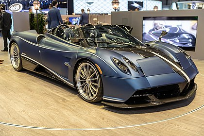

The Pagani Huayra (Italian pronunciation: [ˈwaira]) is a mid-engine sports car produced by Italian sports car manufacturer Pagani, succeeding the company's previous offering, the Zonda. It is named after Wayra Tata, the Quechua (indigenous South American) wind god.[4][5] The Huayra was named "The Hypercar of the Year 2012" by Top Gear magazine. On 11 February 2015 it was reported that the Pagani Huayra has been sold out. The Huayra was limited to just 100 units as part of Pagani's agreement with engine supplier Mercedes-AMG.[6]
